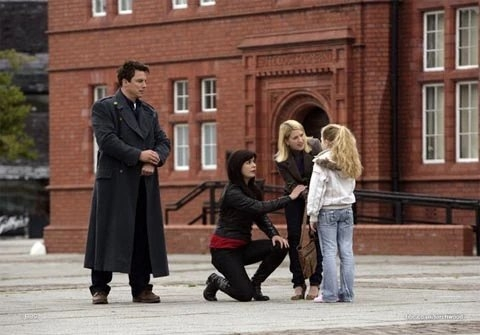

Эра Десятого Доктора
<<< НАЗАД ||| 1. День первый ||| ДАЛЬШЕ >>>
или
<<< НАЗАД к сериалу "Доктор Кто"
MVO [Новамедиа], MVO [ТВ-3], DVO [1001cinema]
+ Original [ENG]
Субтитры: Русские и Английские
 | Весь 3-й сезон (5 серий) |
Day One
Дата выхода: 6 июля 2009
Формат: 60-минутный эпизод
| Варианты озвучек: | * Разные: смотрите по инструкции |
|---|---|
| Скачивание и просмотр: |
Когда все дети Земли останавливаются и произносят одну и ту же фразу, «Мы приближаемся», команда Торчвуда начинает опасное расследование, в то время как медленно назревает кризис планетарного масштаба.

